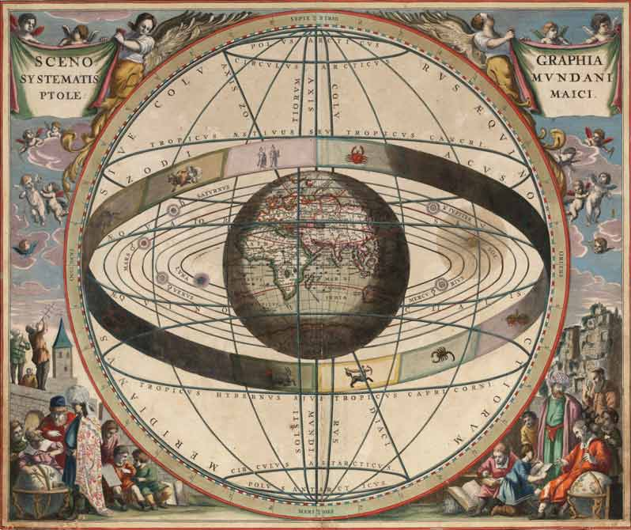

Background
dale
Spring 2021
Created: 2020-10-26 Mon 20:24
Table of Contents
5 Themes
Humanity / Divinity of Christ
- John 1 (NRSV) 1 In the beginning was the Word, and the Word was with God, and the Word was God. 2 He was in the beginning with God. 3 All things came into being through him, and without him not one thing came into being. What has come into being 4 in him was life, …
- Matthew 13:55 Is not this the carpenter’s son? Is not his mother called Mary? And are not his brothers James and Joseph and Simon and Judas?
Spirit and Structure
- Romans 8:2 For the law of the Spirit of life in Christ Jesus has set you free from the law of sin and of death.
Reason and Revelation
- Romans 16:25 Now to God who is able to strengthen you according to my gospel and the proclamation of Jesus Christ, according to the revelation of the mystery that was kept secret for long ages
Works and Grace
- 2 Timothy 1:9 who saved us and called us with a holy calling, not according to our works but according to his own purpose and grace. This grace was given to us in Christ Jesus before the ages began,
Church and State
- Romans 13 Let every person be subject to the governing authorities; for there is no authority except from God, and those authorities that exist have been instituted by God.
Philosophical issues
Battle of arguments for God
Anselm
Aquinas
Pascal
Ptolemaic system

Copernican system

Late Medieval Philosophy
Ockham's razor argued the simpler explanation is to be preferred
Realism
- Universals are "real"
Nominalism
- The only thing "real" are the names we put on things
- Particulars are all that we experience and "know"
Nominalism & Theology
- Ockham (God can do anything)
- 14th c. as focus of mysticism (Meister Eckhart)
- Julian of Norwich (Mother Jesus)
Protest against Church authority
- Competing popes
- Church offices for sale
- John Wycliffe: the Bible could provide foundation to reform Church authority
- John Hus: populist, all should receive communion, clergy are corrupt